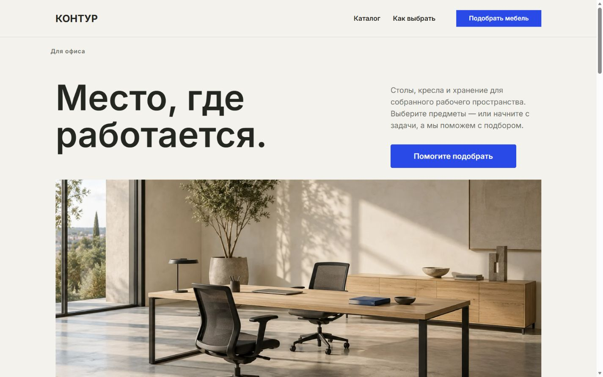
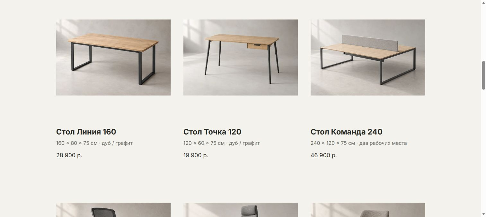
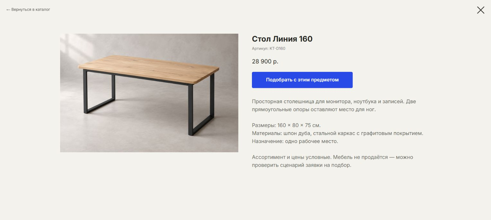
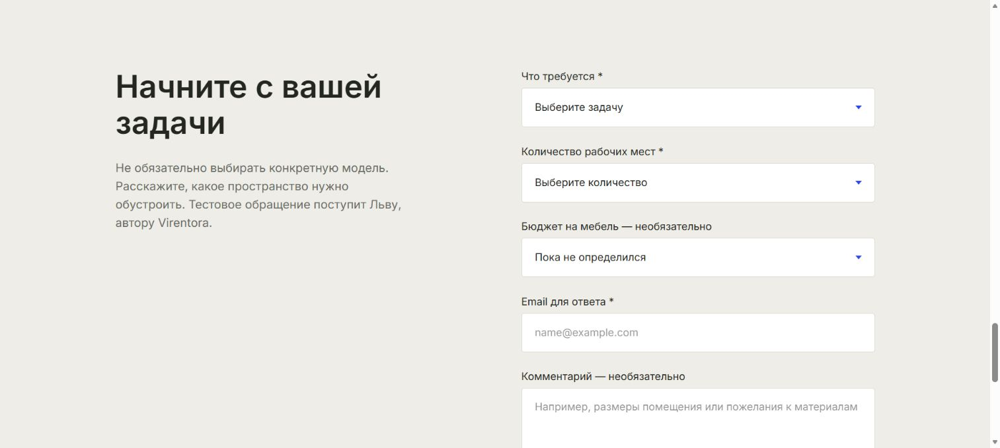
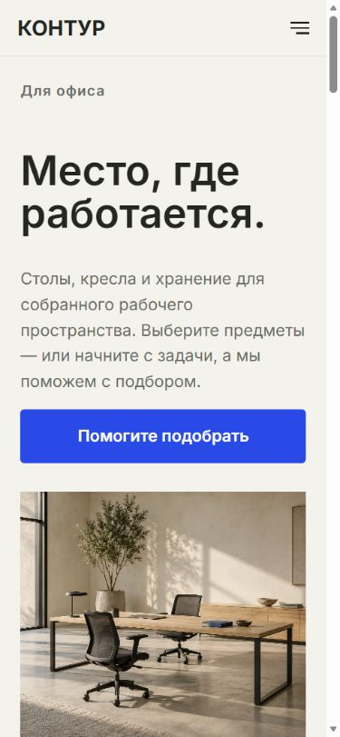
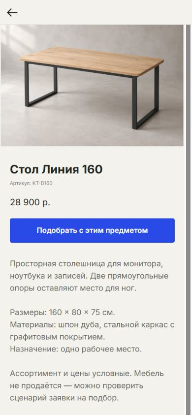
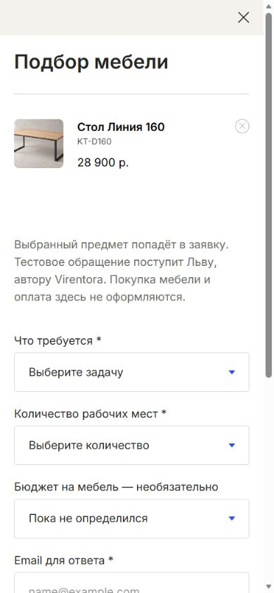
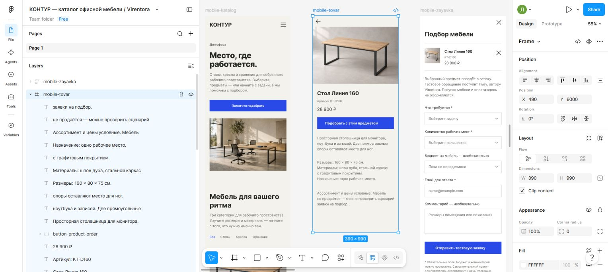
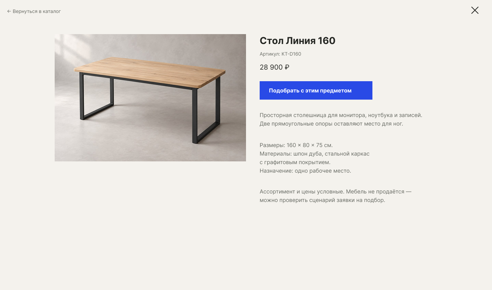
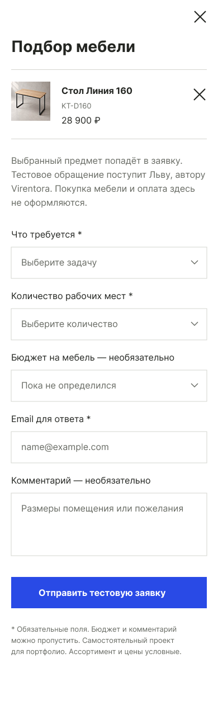

Структура и дизайн
Я подготовил структуру, тексты, изображения и шесть редактируемых экранов Figma. ИИ использован как инструмент подготовки и разработки.
Помочь выбрать предмет по характеристикам или начать с задачи. Макет Figma, сборка на Tilda и заявка на подбор с уведомлением в Telegram.
Самостоятельный проект Льва для портфолио Virentora.

УвеличитьПервый экран опубликованного каталога. Реальный снимок Tilda, 1 октября 2026.
Каталог помогает сравнить мебель по назначению, размерам и материалам. Если предмет уже выбран, заявка сохраняет его название и артикул — не нужно заново объяснять, что заинтересовало.
Если готового решения ещё нет, посетитель начинает с задачи: отдельное рабочее место или комплектация офиса. Форма собирает количество мест, ориентир по бюджету и контакт для ответа.
Я подготовил структуру, тексты, изображения и шесть редактируемых экранов Figma. ИИ использован как инструмент подготовки и разработки.
Первый экран — Zero Block. Каталог, товарные данные и формы — штатные возможности Tilda; Telegram получает уведомления. Дополнительный CSS уточняет оформление.
Проверены основные действия и пять ширин браузера. Подготовлены инструкция обновления каталога, журнал исправлений и сценарий будущего видео.
Тёплый фон, дуб и графит объединяют первый экран и предметные изображения. Синий выделяет действия. В карточках рядом с мебелью видны размеры, назначение и условная цена — ассортимент можно изучить до открытия товара.

УвеличитьКарточки работающего сайта: изображение, название, размеры и условная цена.
Ниже — разбор сохранённых экранов. Полный сценарий доступен на работающем сайте КОНТУРА.
Категория → товар → характеристики → заявка с названием и артикулом. Выбранный предмет можно убрать или заменить, вернувшись к каталогу.

УвеличитьРазмеры, материалы и назначение рядом с действием «Подобрать с этим предметом».
Не обязательно разбираться в моделях заранее. Общая форма принимает задачу, количество рабочих мест, ориентир по бюджету и контакт для ответа — без привязки к товару.

УвеличитьНастоящая форма Tilda. Бюджет и комментарий обозначены необязательными.
Первый экран перестраивается в одну колонку. Характеристики остаются рядом с предметом, а название и артикул переходят в заявку. Каждый кадр можно увеличить до исходного размера.

УвеличитьЗаголовок, вводный текст и действие подбора в одной последовательности.

УвеличитьИзображение, характеристики и переход к заявке на узкой ширине.

УвеличитьСтол «Линия 160» и артикул KT-D160 в начале формы.
В Figma подготовлены каталог, товар и заявка для компьютера и телефона. Тексты, изображения и графические элементы редактируются отдельно. При сборке макет адаптирован к штатным блокам Tilda.

УвеличитьРеальный снимок Figma. Это макет, а не экран опубликованного сайта.

УвеличитьНастоящий экспорт Figma. Полный кадр 1440 × 850 доступен по нажатию.

УвеличитьНастоящий экспорт Figma. Полный кадр 390 × 1270 доступен в увеличении.
Редактируемый файл — по запросу. Прототип показывает путь одного стола; на сайте доступны все девять предметов.
1 октября 2026 две явно помеченные тестовые заявки сохранились в Tilda и были фактически получены в официальном TildaFormsBot. Использовались искусственные данные. Новая страница кейса не отправляет заявки.
В мобильном макете у части мебели не хватало размеров, а цена шкафа переносилась. Данные добавлены, ширина цены настроена; результат сверен по текстовым слоям и свежему полному экспорту.
Копии карточек в Figma открывали чужой стол. Ошибочные связи убраны; отдельно проверен основной путь «каталог → товар → заявка → возврат».
Дополнительные стили действовали только на главной. CSS перенесён в стили проекта Tilda; после перезагрузки проверена заявка с прямой страницы товара и отсутствие итогов покупки.
КОНТУР — самостоятельный проект для портфолио Virentora. Ассортимент, характеристики и цены условные; изображения мебели и интерьера созданы с помощью ИИ. Мебель не продаётся, оплата не принимается. Тестовые обращения поступают автору проекта.
Расскажите об ассортименте и о том, как хотите получать обращения. Согласуем категории, товарные данные, поля подбора и получателя заявок.
Обсудить похожий проектЭто возможный состав будущего проекта. Фильтры по цене, сравнение, корзина, CRM, оплата и склад в текущий КОНТУР не входят.